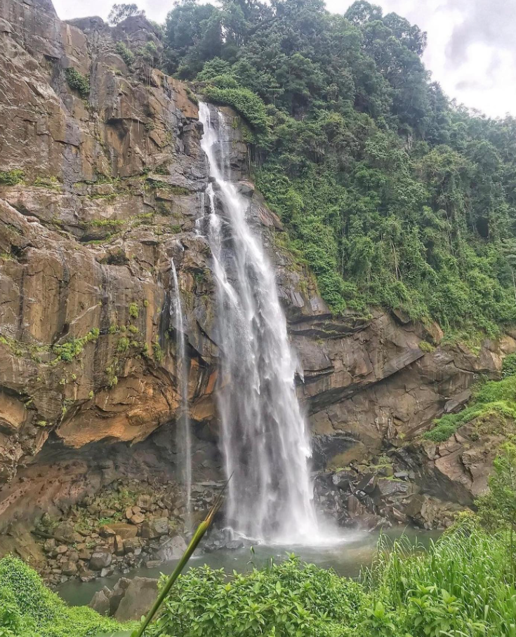

- Aberdeen warterfall
- 
-
- Aberdeen Waterfall is a beautiful waterfall that is situated in the Nuwara Eliya District
of Sri Lanka. The nearest town is Ginigathhena, and it’s about 20km away from the famous Kithulgala.
The height of the waterfall is 98m. This is considered the 18th highest waterfall on the island.
Aberdeen Waterfall is formed by Kehelgamuwa Oya. It is a branch of the Kelani River. The waterfall
received this name because of a British planter. He managed tea estates near the waterfall, and he
was from the city of Aberdeen in Scotland. Then people called the waterfall “Aberdeen’. The total
width of the waterfall is 8 m.Starting from Ginigathhena town, you need to go along the Ambatale road.
You need to stop your vehicle in the park near the Buddha stratum. Then you need to walk about 1200m
to reach the Waterfall.There is a nice stage where you can view the beauty of the waterfall clearly.
Anyhow, you can walk close to the waterfall. But don’t try to bathe or swim in the front pool. It’s
deep and dangerous for all. You can see a small cave behind the waterfall. October to December is the
best time to visit here. The May–September period is the rainy season for the surrounded area,
and January–March is the dry season.